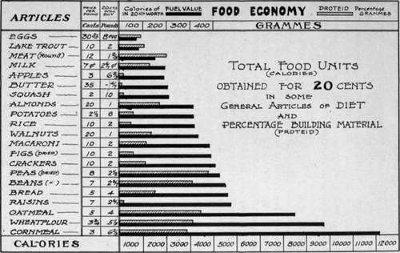

Food Economy
Description
This section is from the book "Food And Cookery, Their Relation To Health", by H. S. Anderson. Also available from Amazon: Food Cookery, Their Relation To Health.
Food Economy
"Economy is not saving, but wisely spending."—Ruskin.
When we have ascertained that a food is rich in nutritive constituents, and that it is of a nature to be easily digested in the stomach, we have still to find whether the nutriment it yields is obtained at a reasonable cost. When one realizes that the market price of a food is no indication of its real money value, the practical importance of such a test is more convincingly felt, because in the market one usually pays for flavor and rarity, not for nutritive qualities. To the working classes, who spend on an average fifty per cent of their wages for food supply, such knowledge is of special value. By a study of the chemical analysis of various foods bought for a particular sum, this test may be applied without difficulty. See Fig. 2.
Fig. 2.
It will be seen that for energy (calories), grains lead the way, for instance,—nearly ten times as much nourishment can be obtained for twenty cents worth of wheat flour as for the same amount invested in trout or eggs; even more value is obtained for the same money when invested in cornmeal. In the matter of protied material, the legumes come first, while most of the grains contain proteid in a liberal proportion.
When the flesh of animals is used as food, there is great danger of excess of proteid material. Besides being of a stimulating character, it contains no carbohydrate to offset the large per cent of proteid. One advantage of using food of vegetable origin, is that in their growth vegetables secrete no poisons; whereas, in all animals the very process of life consists in the breaking down of tissues and the formation of various poisons. These poisons are in the flesh when the animal is killed, and no amount of cooking can remove them. Thus, by taking our food in the vegetable form, we avoid burdening the system with such a quantity of harmful substances, which must be eliminated from the system only at a great sacrifice to the vital organs. Many people seem to be under the impression that bodily strength and health are dependent upon the use of flesh meats. A quotation again from Ministry of Healing, throws much light on this question, and points out in a simple manner the advantages to be had in a simple and natural diet above that of a more complex nature.
"It is a mistake to suppose that mucular strength depends on the use of animal food. The needs of the system can be better supplied, and more vigorous health can be enjoyed, without its use. The grains, with fruits, nuts, and vegetables, contain all the nutritive properties necessary to make good blood. These elements are not so well or so fully supplied by a flesh diet. Had the use of flesh been essential to health and strength, animal food would have been included in the diet appointed man in the beginning.
"When the use of flesh food is discontinued, there is often a sense of weakness, a lack of vigor. Many urge this as evidence that flesh food is essential; but it is because foods of this class are stimulating, because they fever the blood and excite the nerves, that they are so missed. Some will find it as difficult to leave off flesh-eating as it is for the drunkard to give up his dram; but they will be the better for the change.
1 'When flesh food is discarded, its place should be supplied with a variety of grains, nuts, vegetables, and fruits, that will be both nourishing and appetizing."—Ministry of Healing.
It would seem that the use of flesh meats must be doubly objectionable now, since disease in animals is so rapidly increasing. Those who use flesh as food little know of what they are eating. Tuberculosis, cancer, and other fatal diseases are communicated by the use of contaminated meat. True reform always replaces an evil with something better. So, in the matter of diet, nature presents to us a field of boundless wealth, the Creator's choice for us, a plenteous store to choose from, and at prices within the reach of every creature. There is a rhyme that beautifully expresses this truth with its resultant tribute:—
"Eat life from Life's fresh growing garden, Drink life from its myriad store, Give life, and its flow E'er increasing will go Again to your open door".
Health reform, as any other true reform, is a matter of education, and must be progressive; vital principles are involved in which are treasured up wisdom of the highest order for every seeker after health and truth. There has recently been formed throughout the United States a number of different societies for the purpose of studying the best means of providing for the table foods which do not harbor pestilence and disease, and for studying the development of the culinary art in the home in harmony with right principles. Thus it is plainly seen that the minds of thinking people are being awakened to see the importance of exercising sound judgment and good common sense in the matter of the care and preservation of health.
The following course of lessons is in no way intended as a complete guide to hygienic cookery. Of the great variety of ways in which the grains, fruits, nuts, and vegetables may be prepared into dishes that are healthful and nourishing, only a few of the most practical can be taken up in this course. One of the main objects is to give some of the general principles essential to success in this work, followed by practical illustrations of methods used. For home and class work this course consists of a series of sixteen lessons, two lessons each week, each session occupying two hours. Eight pupils constitute a class, at which time practical work is done. Due recognition is given to the study of the nutritive value of foods, their digestibility, combinations, etc., also menu-making and the general principles involved in the making of the same.
This suggestive course of lessons, designed especially for demonstration and field work, may be modified by the instructor according to convenience to the occasion, or to the length of time given for class periods. A previous study of the recipes and instructions following will help to make the work very simple and easily understood when the hour comes for class.
Continue to: